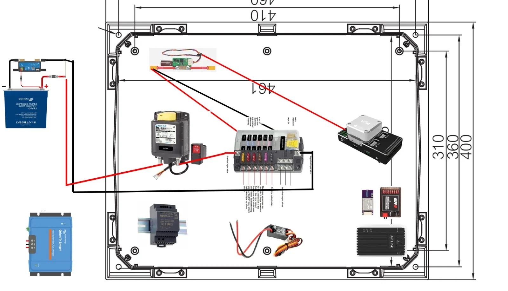
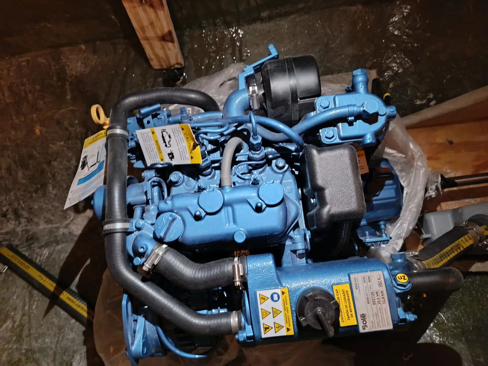

Work across vessel subsystems
I prepared the architecture and BOM around rudder and throttle control, power, safety equipment and navigation. The work included CUAV V6X and ArduRover configuration planning.
Make interfaces visible
The documentation specified RTK, AIS, NMEA2000, companion compute and communications interfaces. Original engine, rudder and controller photographs provide physical context for the integration work.




Describe the evidence accurately
The engagement supports design, documentation and integration responsibilities. It does not establish measured sea-trial performance, a certified autonomy level or an operational rescue deployment.
From the project documents
Inside the report · 1 pages
Autonomous-vessel cable layout
An original bilingual cable-layout drawing showing how navigation, propulsion and control equipment connect within an autonomous rescue-vessel design.

Read the PDF here
Engineering layout work sample. It is separate from the confidential twin-waterjet USV and is not a photograph of that vessel.
Project record
A completed client engagement and project photographs support the design and integration scope. No independently measured sea-trial performance, certified autonomy level or rescue deployment is asserted.